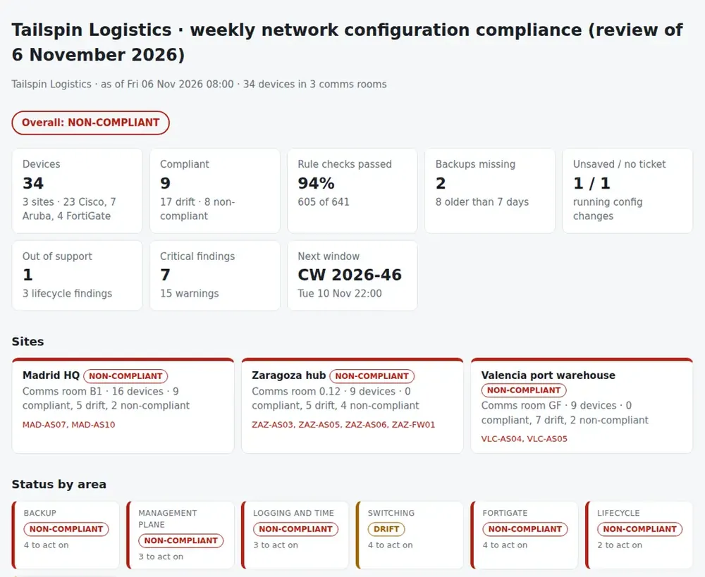

Un switch de acceso se cambió a las dos de la madrugada sin ticket y el cambio nunca se guardó, así que el próximo corte de luz se lo llevará. Un switch de una sede sigue aceptando telnet, el acceso remoto antiguo y sin cifrar, porque se instaló con una plantilla antigua. Así lo detecta la revisión semanal de configuración de red que acompaña a este post, que da por no conformes 8 de 34 equipos, una herramienta que se ejecuta con datos de ejemplo de una empresa de logística inventada con tres salas de comunicaciones, revisada el 6 de noviembre con los problemas puestos a propósito: 9 equipos conformes, 17 con desviaciones y 8 no conformes, con siete hallazgos críticos para la próxima ventana de cambios.
Las configuraciones de red se desvían de cambio nocturno en cambio nocturno, y en una empresa con varias salas de comunicaciones nadie lee todas las configuraciones cada semana. Cada problema se ve en un sitio, la copia, el inventario o el calendario de cambios, y nadie los junta. La herramienta lee las copias, las compara con una línea base y con los cambios aprobados, y da a cada equipo, a cada sede y a toda la red un estado: conforme, con desviaciones o no conforme.
Un FortiGate abierto por la WAN y una política de todo a todo que quedó de una migración
Un FortiGate tiene la administración por HTTPS y SSH abierta en su interfaz WAN, la que da a internet, y una política que acepta de all a all con servicio ALL y sin log, que quedó de una migración hace dos meses. La revisión comprueba la administración en interfaces WAN, las políticas any-any que aceptan, las políticas sin log, las desactivadas que se quedan meses y el firmware por debajo de la línea base.
Dos equipos responden a SNMP, el protocolo con el que la monitorización lee los equipos, con la comunidad public, uno de ellos porque nadie quitó la que trae de fábrica. Los switches de una sede apuntan el NTP, el servicio de hora, a un servidor que se apagó, así que sus logs no cuadran con los del resto. Las comprobaciones de gestión cubren solo SSH v2, nada de telnet, cifrado de contraseñas, AAA con TACACS+ o RADIUS y respaldo local, un banner de acceso, un tiempo de inactividad y el acceso de gestión limitado a la red de gestión.
Dos equipos sin copia y una sede con diez días de retraso
Dos equipos no tienen ninguna copia, y las copias de toda una sede tienen diez días desde que una regla de firewall rompió la tarea de copia. La herramienta marca los equipos sin copia, las copias de más de una semana, las configuraciones de Cisco cambiadas después del último guardado y los cambios hechos fuera de un ticket aprobado.
Seis puertos sin usar están levantados en la VLAN 1, el segmento de red por defecto. Un router tiene una versión que no está en la lista aprobada, y un switch de acceso lleva cinco años sin soporte del fabricante y sigue en el rack. En switching, la revisión comprueba que los puertos sin usar estén apagados en la VLAN de aparcamiento, PortFast y BPDU guard en los puertos de usuario, nada de VLAN nativa 1 en las troncales y port security donde la línea base lo pide. Los puertos sin usar son los que no tienen descripción, porque la descripción es el registro de que un puerto está en uso.
Cómo usarlo con datos reales
Hay un pequeño parser por plataforma: Cisco IOS-XE con sus líneas Last configuration change y NVRAM config last updated, ArubaOS-Switch y FortiOS. Cada regla da a cada equipo cumple, no cumple o no aplica, así que la evidencia para una auditoría es un CSV; un fallo crítico hace no conforme a un equipo y una sede toma el peor estado de sus equipos. El repositorio incluye un recolector de solo lectura en PowerShell con Posh-SSH que solo envía show running-config o show full-configuration, y las copias de Oxidized y RANCID sirven tal cual. Funciona con Python solo con la librería estándar y genera un informe web con una cuadrícula de equipos, un pack para el comité de cambios con una ventana propuesta y una columna de decisión por hallazgo, y ficheros CSV. Incluye 14 tests y un runbook para el ciclo semanal. Las fechas de fin de soporte salen de la misma exportación de Device42 que usa el planificador del ciclo de vida de equipos publicado antes en la serie. La empresa y sus equipos son ficticios.
De dónde sale
La herramienta nace de operar switches y routers Cisco, salas de comunicaciones y racks en varias sedes, de Device42, de Fortinet FortiGate y de redes LAN, WAN y wifi en España, Italia y Turquía, y de ser responsable del proceso de gestión de cambios y de la CMDB. Las lecciones que me quedo: una copia que nadie comprueba no es una copia, y una política any-any temporal nunca es temporal si nadie le pone fecha.
¿Quieres llevarlo a tu entorno o adaptarlo a tu caso? Escríbeme y lo vemos.
Tech Career Lab · newsletter
¿Te ha servido? Cada dos semanas envío una idea práctica para perfiles IT: LinkedIn, proyectos, networking y procesos de selección.
Apúntate y llévate las 33 ideas →